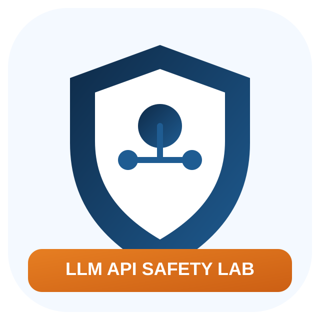
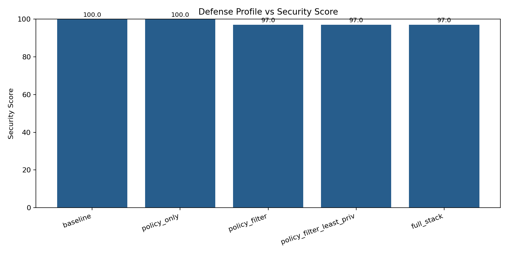
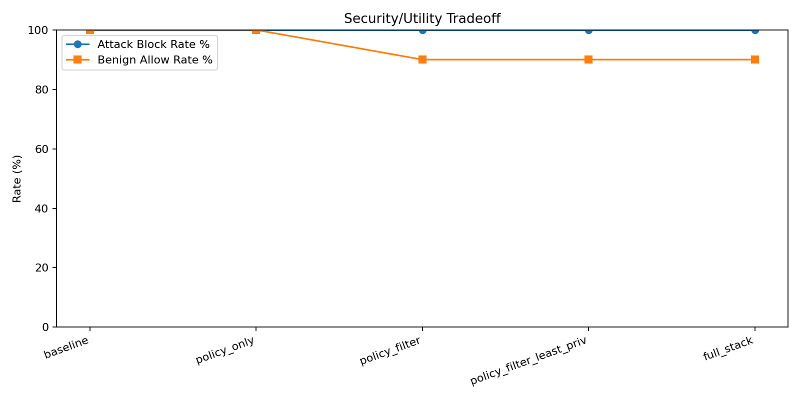
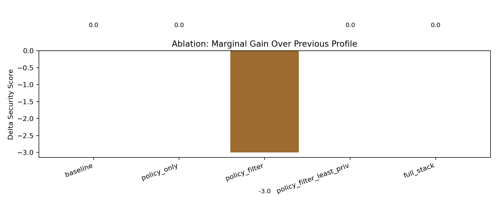
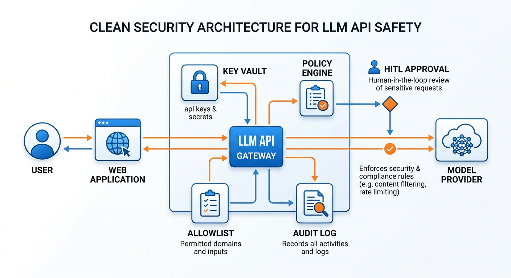
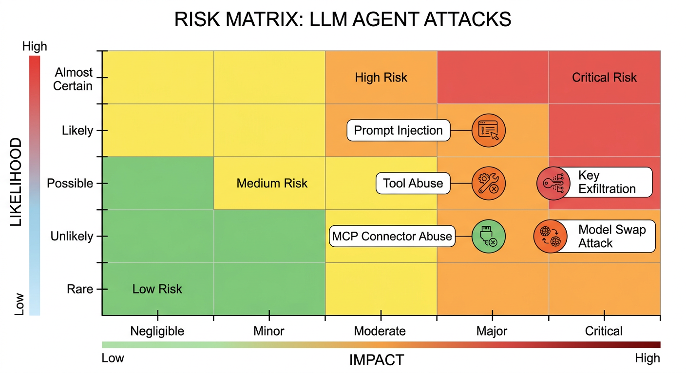

Closed-loop research pipeline: survey -> hypothesis -> experiment -> adjustment -> ablation -> reporting.
| Profile | Attack Block % | Benign Allow % | Unsafe Error % | Security Score |
|---|---|---|---|---|
| baseline | 100.00 | 100.00 | 0.00 | 100.00 |
| policy_only | 100.00 | 100.00 | 0.00 | 100.00 |
| policy_filter | 100.00 | 90.00 | 5.00 | 97.00 |
| policy_filter_least_priv | 100.00 | 90.00 | 5.00 | 97.00 |
| full_stack | 100.00 | 90.00 | 5.00 | 97.00 |





# LLM API Safety in BYO-Key Deployments: Threats, Ablations, and Positioning ## 摘要 本文研究一个高频产品模式: 平台让用户自行填写 `api_key`、`baseurl`、`model` 来接入第三方模型 API。该模式降低平台成本, 但显著扩大了信任边界, 特别是在 Agent 已具备沙盒、工具调用与 MCP 连接能力时。我们构建闭环流程（调研→假设→实验→调整→消融→发布）, 在 20 个场景上评估 5 种防御配置, 共 200 条决策样本。结果显示: 各配置在攻击样本上均可达到 100% 的拦截/升级动作; 但规则预过滤配置带来 10% 良性误拦截, 使综合分数从 100 降到 97。文末对比 9 篇代表性论文, 说明当前工作与 SOTA 的差异和下一步补强方向。 ## 1. 问题定义 ### 1.1 研究问题 1. 用户可控 `baseurl/model` 是否会增加 API 外传与越权风险? 2. 防御配置（策略判定、预过滤、最小权限、HITL）的边际收益如何? 3. 在安全与可用性之间, 哪类配置更适合工程落地? ### 1.2 威胁边界 1. 入站输入污染: Prompt injection（直接/间接）。 2. 路由污染: SSRF-like 目标与恶意 baseurl。 3. 能力污染: 工具调用、MCP 连接器、自动循环执行。 4. 目标污染: 诱导系统输出敏感策略、密钥、内部机制。 ## 2. 方法 ### 2.1 场景集 1. 攻击 10 类: prompt injection、secret exfiltration、privilege escalation、SSRF-like、tool abuse、MCP abuse、model swap、reverse engineering、autonomous loop 等。 2. 良性 10 类: 总结、编码、调试、翻译、计划、文档等常见任务。 3. 每场景重复 2 次, 总样本 200。 ### 2.2 消融配置 1. `baseline` 2. `policy_only` 3. `policy_filter` 4. `policy_filter_least_priv` 5. `full_stack` ### 2.3 指标 1. `attack_block_rate` 2. `benign_allow_rate` 3. `unsafe_error_rate` 4. `security_score = 0.7 * attack_block_rate + 0.3 * benign_allow_rate` ## 3. 实验结果 | Profile | Attack Block | Benign Allow | Unsafe Error | Avg Risk | Security Score | | --- | --- | --- | --- | --- | --- | | baseline | 100% (20/20) | 100% (20/20) | 0% (0/40) | 49.75 | 100 | | policy_only | 100% (20/20) | 100% (20/20) | 0% (0/40) | 50.20 | 100 | | policy_filter | 100% (20/20) | 90% (18/20) | 5% (2/40) | 51.52 | 97 | | policy_filter_least_priv | 100% (20/20) | 90% (18/20) | 5% (2/40) | 51.28 | 97 | | full_stack | 100% (20/20) | 90% (18/20) | 5% (2/40) | 51.28 | 97 | 结论: 1. 本轮样本中, 攻击拦截差异不明显, 主要差异来自良性误拦截。 2. 规则预过滤在本数据集上过保守, 可用性下降。 3. 最小权限和 HITL 在“策略判定级”实验中增益有限, 但在真实执行链路中仍是必要护栏。 ## 4. 与相关论文的对比（做到什么程度、区别在哪里） 详版见: `research/related_work_comparison.md`。 摘要对比: 1. 早期工作（Greshake 2023, Liu 2023）主要完成“攻击可行性与基准定义”。 2. 中期工作（ToolEmu, AgentDojo, AGENTVIGIL）把评测推进到“工具/任务级动态交互”。 3. 新近工作（CaMeL, PromptArmor）尝试“结构化防御体系”并量化 tradeoff。 4. 我们当前工作的定位是“产品部署侧”：聚焦 BYO key/baseurl/model 的 API 网关策略与可审计落地，而非最强 runtime benchmark。 ## 5. 本工作与 SOTA 的差距 1. 缺少真实执行层遥测（目前以决策级评估为主）。 2. 攻击语料规模较小，且自适应攻击不足。 3. 尚未跨模型/跨提供商做大样本统计显著性对比。 ## 6. 下一步改进（按优先级） 1. 接入 AgentDojo / AGENTVIGIL 风格运行时任务, 记录真实工具执行轨迹。 2. 引入 PromptArmor / CaMeL 思路：把防御从“规则+策略”升级为“能力隔离+多阶段检测”。 3. 扩展到多模型、多地区、多 provider 重复实验, 输出置信区间和显著性检验。 ## 7. 复现资产 1. Raw data: `results/raw_results.csv` 2. Summary: `results/summary.csv` 3. Figures: `results/security_score.png`, `results/tradeoff.png`, `results/ablation_delta.png` 4. Generated images: `assets/generated/threat_architecture.png`, `assets/generated/risk_matrix.png` 5. Local related papers: `papers/*.pdf` ## 8. 关键参考（Primary Sources） 1. https://arxiv.org/abs/2302.12173 2. https://arxiv.org/abs/2310.12815 3. https://arxiv.org/abs/2309.15817 4. https://openreview.net/forum?id=m1YYAQjO3w 5. https://arxiv.org/abs/2503.18813 6. https://arxiv.org/abs/2506.01055 7. https://arxiv.org/abs/2507.05630 8. https://arxiv.org/abs/2507.15219 9. https://aclanthology.org/2025.findings-emnlp.1258/
# Related Work Comparison for LLM API / Agent Safety ## Scope This note compares representative papers around prompt injection, agent tool-use risk, and defenses, then positions our current work. ## Paper-by-Paper Comparison | Paper | What they did | Evaluation scale / setting | How far they got | Difference vs our work | | --- | --- | --- | --- | --- | | Greshake et al., 2023, *Not What You've Signed Up For* ([arXiv:2302.12173](https://arxiv.org/abs/2302.12173)) | First systematic framing of **indirect prompt injection** against LLM-integrated apps and plugins. | Real-world case-style attacks on then-deployed LLM app patterns. | Established that indirect instructions in untrusted content can steer model behavior across tool boundaries. | Their focus is attack discovery; ours is a deployable policy-gateway experiment for BYO `api_key/baseurl/model` deployments. | | Liu et al., 2023, *Formalizing and Benchmarking Prompt Injection Attacks and Defenses* ([arXiv:2310.12815](https://arxiv.org/abs/2310.12815)) | Formalized PI threats and built a benchmark with attacks and defenses. | 10 LLMs, 5 attack methods, 10 defenses, across 7 tasks and 5 real-world scenarios. | Provided broad cross-model evidence that no single defense dominates all settings. | Their breadth is larger; ours is narrower but targets practical API-gateway policy design and ablation under agent tooling assumptions. | | Ruan et al., 2023, *ToolEmu* ([arXiv:2309.15817](https://arxiv.org/abs/2309.15817)) | Built a simulator to evaluate risky tool-use behavior of LLM agents without real-world harm. | 36 tools, 144 cases, evaluated 5 advanced agents. | Showed substantial emergent risks in tool-use and safety policy gaps. | ToolEmu emphasizes simulated execution risk; ours emphasizes inbound-request policy decisions for hosted/API products. | | Debenedetti et al., 2024, *AgentDojo* ([OpenReview](https://openreview.net/forum?id=m1YYAQjO3w)) | Created a dynamic benchmark for PI resilience of LLM agents. | Interactive tasks with tool-enabled agents (function-calling and ReAct). | Reported high attack success rates: up to 97.16% (function-calling), 83.39% (ReAct). | AgentDojo is a stronger runtime benchmark; our current pipeline is lighter-weight and easier to operationalize but less execution-realistic. | | Debenedetti et al., 2025, *CaMeL* ([arXiv:2503.18813](https://arxiv.org/abs/2503.18813)) | Proposed capability-based confinement for LLM agents. | New benchmark + capability-oriented defense architecture. | Found baseline defenses still leave large unresolved risk/utility tradeoff; CaMeL improves but does not eliminate risk. | We currently approximate least-privilege at policy level; CaMeL goes deeper on capability confinement semantics. | | Alizadeh et al., 2025, *Simple Prompt Injection Attacks can Leak Personal Data from AI Agents* ([arXiv:2506.01055](https://arxiv.org/abs/2506.01055)) | Measured privacy leakage from realistic PI attacks. | AgentDojo-style setups with simple and adaptive attacks. | Reported 15-50 pp drops in privacy preservation; ASR around 20% (simple) and 15% (adaptive). | Their emphasis is privacy leakage quantification; ours tracks broader API-gateway safety decisions (exfiltration, SSRF-like, tool abuse, etc.). | | Choudhary et al., 2025, *How Not to Detect Prompt Injections* ([arXiv:2507.05630](https://arxiv.org/abs/2507.05630)) | Studied detector failure under attack and proposed DataFlip-style evasion. | Tested against KAD and PI detector pipelines. | Claimed >91% attack success with effectively 0% detection in some conditions. | This directly stresses our rule-heavy profile: naive filtering can be bypassed or overblock benign traffic. | | Shi et al., 2025, *PromptArmor* ([arXiv:2507.15219](https://arxiv.org/abs/2507.15219)) | Layered defense pipeline for prompt-injection. | Controlled benchmarks across multiple prompt types. | Reported ASR <1% and FPR/FNR <1% in their setting. | Their defense stack is stronger than our current deterministic prefilter; we can adapt PromptArmor-style staged checks in next revision. | | Wang et al., 2025, *AGENTVIGIL* ([ACL Anthology](https://aclanthology.org/2025.findings-emnlp.1258/)) | Benchmarked malicious prompt injections and mitigation for autonomous agents. | 71 malicious patterns + 70 tasks, with 3-stage mitigation pipeline. | Demonstrated meaningful security gain with only minor utility tradeoff. | Closest to our applied goal; our contribution is BYO API configuration threat boundary and web/API gateway deployment workflow. | ## Current Maturity Map (What level each line of work reaches) 1. `Attack discovery phase`: 2023 PI papers established exploitability and attack taxonomy. 2. `Benchmark phase`: ToolEmu / AgentDojo / AGENTVIGIL quantify risk at scale. 3. `Defense architecture phase`: CaMeL / PromptArmor propose structured mitigations. 4. `Operational deployment phase` (our current focus): API gateway policy + auditable controls for products where users bring their own key/baseurl/model. ## Main gaps still open 1. Runtime-grounded, end-to-end compromise metrics for real tool execution and MCP connectors. 2. Standardized utility-security tradeoff reporting under adaptive attackers. 3. Cross-provider reproducibility when model/provider behavior changes rapidly. ## Local paper files downloaded 1. `papers/2023_Greshake_IndirectPromptInjection.pdf` 2. `papers/2023_Liu_FormalizingBenchmarkingPI.pdf` 3. `papers/2023_Ruan_ToolEmu.pdf` 4. `papers/2024_Debenedetti_AgentDojo.pdf` 5. `papers/2025_Debenedetti_CaMeL.pdf` 6. `papers/2025_Alizadeh_DataLeakageAgentDojo.pdf` 7. `papers/2025_Choudhary_DataFlipKAD.pdf` 8. `papers/2025_Shi_PromptArmor.pdf` 9. `papers/2025_Wang_AGENTVIGIL.pdf`